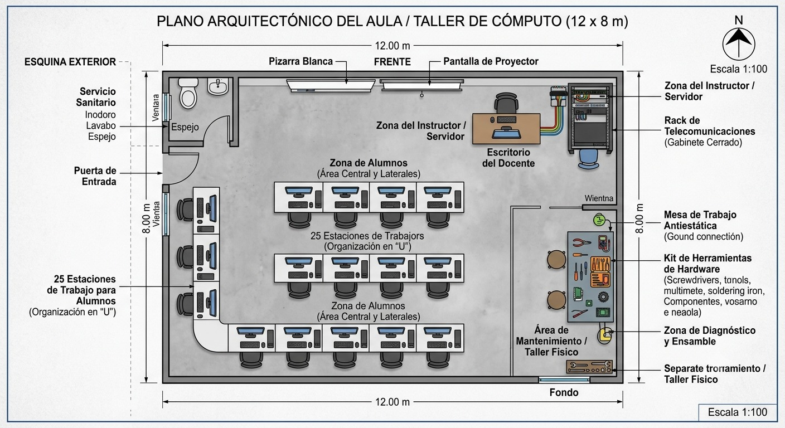

1. Diagrama del Aula de Informática
i — Distribución
División de las Áreas

Plano arquitectónico a escala 1:100 del aula/taller de cómputo de 12 × 8 metros. Muestra la distribución de 25 estaciones de trabajo para alumnos organizadas en "U", zona del instructor/servidor, escritorio del docente, rack de telecomunicaciones, área de mantenimiento/taller físico, zona de diagnóstico y ensamble, pizarra blanca, pantalla de proyector, y servicio sanitario.
ii — Instalación Eléctrica
Instalación Eléctrica y de Iluminación
Iluminación
8 lámparas LED de panel de bajo consumo distribuidas uniformemente para evitar reflejos en pantallas.
Tomas de Corriente
Tomacorriente dúplex polarizado con conexión a tierra, en canaletas plásticas perimetrales.
Tablero de Distribución
Pastillas termomagnéticas independientes: una por fila de PC, otra para iluminación y otra para A/C.
No-Break (UPS)
UPS de 2200VA para proteger el servidor y los switches del rack principal.
iii — Seguridad y Confort
Medidas de Seguridad y Confort
Accesos
Puerta principal de aluminio con apertura hacia afuera. Salida de emergencia con barra antipánico.
Prevención de Incendios
1 detector de humo fotoeléctrico + 2 extintores de CO2 para equipo electrónico.
Climatización
2 minisplit de 24,000 BTU para mantener 22–24°C óptimos.
Higiene
Estación de sanitización fija con dispensador automático de gel antibacterial.
2. Muebles y Equipos de Cómputo
a — Infraestructura de Red
Infraestructura de Red y Computadoras
Estaciones de Trabajo (25 + 1 docente)
Procesador AMD Ryzen 5 o Intel Core i5, 16 GB RAM, Disco SSD de 512 GB para arranque rápido de entornos de desarrollo y software, Monitores LED de 21.5".
Servidor Local
Computadora de altas prestaciones destinada a bases de datos locales, control de dominio y almacenamiento de prácticas.
Topología y Cableado
Topología en Estrella. Cableado estructurado con cable UTP Categoría 6, canalizado a través de canaletas de PVC de alta resistencia.
Switch
1× administrable de 48 puertos Gigabit Ethernet.
Router
1× conectado al módem del proveedor de internet escolar.
b — Muebles
Descripción de los Muebles
Mesas Modulares
Estructura metálica con espacio pasacables oculto, para 2–3 estudiantes.
Sillas Ergonómicas
26 sillas con ruedas, ajuste de altura y respaldo transpirable.
Mesa de Taller
Madera tratada con tapete antiestático para evitar descargas en componentes.
Armario de Herramientas
Locker metálico con llave para destornilladores, cautines, multímetros y consumibles de red.
c — Software
Descripción del Software
Sistema Operativo
Windows 11 Pro de 64 bits en todas las estaciones. Linux Ubuntu Server en el equipo servidor.
Software de Desarrollo e Informática
VS Code
NetBeans
Cisco Packet Tracer
MySQL Workbench
XAMPP
Git
Stencyl
Scratch
Seguridad
Antivirus institucional con consola de administración centralizada y software de congelamiento de disco (tipo Deep Freeze) para restaurar el estado original del sistema tras cada reinicio de clase.
d — Personal
Descripción del Personal — Tabla de Puestos
| Puesto |
Perfil |
Funciones |
| Encargado / Administrador del Taller |
Lic. en Informática, Ing. en Sistemas Computacionales o Profesional Técnico con título. |
- Supervisar el uso correcto de las instalaciones.
- Gestionar el inventario de hardware y software.
- Coordinar los horarios de uso del aula.
- Reportar fallas mayores a la dirección escolar.
|
| Soporte Técnico / Auxiliar del Aula |
Profesional Técnico en Informática (egresado o pasante con certificado). |
- Encender y apagar los equipos al inicio y fin de la jornada.
- Mantenimiento preventivo (limpieza física, desfragmentación, actualizaciones).
- Solucionar problemas de conectividad de red y fallas de software.
- Apoyar a los docentes en la instalación de herramientas para sus clases.
|
3. Políticas y Reglamentos del Aula/Taller
Personal — Docentes
Reglas para el Personal (Docentes y Administrativos)
Registro de Asistencia
El docente a cargo del grupo debe firmar la bitácora de entrada y salida, especificando la materia, el grupo y la cantidad de alumnos presentes.
Reporte de Incidencias
Cualquier falla detectada en el hardware o software durante la sesión debe ser anotada de inmediato en el formato de reportes técnicos.
Supervisión Activa
El docente es responsable del orden dentro del aula y debe vigilar que los alumnos no modifiquen conexiones físicas ni configuraciones de red.
Cierre Seguro
Al terminar la última sesión del día, el encargado debe verificar que todos los equipos queden apagados, los aires acondicionados apagados y el rack bajo llave.
Usuarios — Alumnos
Reglas para los Usuarios (Alumnos)
🚫 Prohibición de Alimentos
Está estrictamente prohibido ingresar con alimentos, dulces o cualquier tipo de bebida al taller para evitar daños irreparables por derrames.
🎓 Uso Exclusivo Académico
Queda prohibido descargar, instalar o ejecutar videojuegos, software de minería, archivos pirata o navegar en páginas de contenido no educativo.
🪑 Cuidado del Mobiliario
No se permite rayar las mesas, balancearse en las sillas ergonómicas, ni desconectar los cables de red o de energía de las computadoras.
🧹 Orden y Limpieza
Al finalizar la clase, cada estudiante debe cerrar su sesión de usuario, acomodar la silla, dejar su área limpia y retirar sus pertenencias personales.